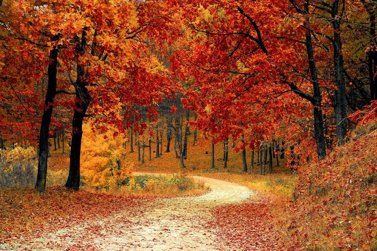
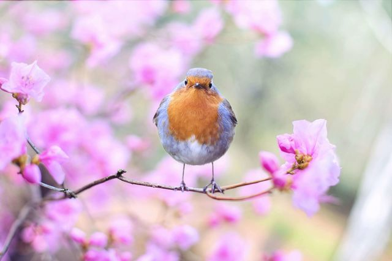
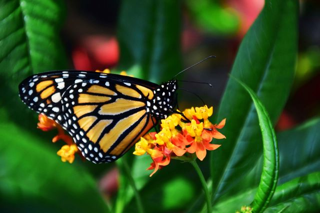

עונות השנה הן מספר תקופות עיקריות, באזורים הממוזגים של כדור הארץ, שאליהן מחולקת כל שנה. כל אחת מעונות השנה מאופיינת באקלים משלה ומספר שעות אור שונה ביממה.
לעונות השנה השפעה עצומה על החיים על-פני כדור-הארץ. המחזוריות של עולם הצומח, נדידת הציפורים, ואפילו מצבי הרוח שלנו משתנים בהתאם לחילופי העונות,
אילולא עונות השנה דובים לא היו נמים בחורף, פריחת החצב לא הייתה מבשרת את בוא הסתיו, לא היינו מתרגשים כל שנה עם בוא היורה, וט"ו בשבט לא היה מתקשט בפריחת השקדיה.
כידוע, חילופי העונות הם תוצאה של מסלול כדור-הארץ סביב השמש. אולם מעטים יודעים שהגורם לשינויים עונתיים אינו המרחק המשתנה מהשמש, כי אם זווית הנטייה של כדור-הארץ ביחס אליה.
זו משפיעה על מידת העוצמה ומשך הזמן בהם קרני השמש פוגעות בחלקים שונים על-פני הכדור. למעשה, דווקא בתקופת הקיץ בהמיספירה הצפונית, בה נמצאת ישראל, מרחק כדור-הארץ מהשמש גדול יותר מאשר בתקופת החורף.
"סתיו"

הסתיו הוא אחת מארבע עונות השנה, מציין את המעבר בין הקיץ לחורף ולכן מכונה עונת מעבר.
באזורים הממוזגים, הסתיו הוא העונה בה רוב הגידולים החקלאיים נאספים, ויש שלכת שבמהלכה העצים משירים את עליהם, מזג האוויר קריר וגשם יורד. בישראל, שבה האקלים הוא ים תיכוני, הסתיו הוא העונה שבה יורדים הגשמים הראשונים. ברצועת המדבריות שבאזורים הסובטרופיים (שישראל נמצאת בקצה הצפוני שלהם) שולטות עדיין מערכות תרמיות, כמו האפיק הפרסי והאפיק מים סוף. בסתיו גם מתחולל לעיתים שרב. מערכות אלה דועכות לקראת סוף הסתיו.
"חורף"
עונת החורף היא אחת מארבע עונות השנה. זו העונה עם הימים הקצרים ביותר (יחד עם הסתיו) והטמפרטורות הנמוכות ביותר. באזורים המרוחקים מקו המשווה יורד שלג בעונת החורף.
החורף המטאורולוגי הוא העונה שבה הימים הקצרים ביותר והטמפרטורות הנמוכות ביותר (עם שוני בקנה מידה גדול בהתאם לקו הרוחב הגאוגרפי). שעות הלילה הן דומיננטיות בתקופת החורף ובמרבית האזורים הוא מאופיין בכמות המשקעים הגדולה ביותר. מבחינה אסטרונומית החורף מתחיל ביום הקצר ביותר בשנה ובכל יום חורף יש יותר אור שמש מאשר בקודמו.
מחוץ לאזור המשווני החורף הוא קר ומושלג (בייחוד בחצי הכדור הצפוני). ובאזורים בעלי האקלים הממוזג (צפונית לישראל) מתפתחות סופות שלג עזות הגורמות לשיבושים רבים. תופעה מטאורולוגית נדירה המתרחשת בחורף היא "ערפילי קרח" - גבישי קרח קטנים המרחפים באוויר רק כאשר הטמפרטורות צונחות מתחת ל־30- מעלות צלזיוס.
"אביב"

אָבִיב הוא אחת מארבע עונות השנה של האקלים הממוזג, ובו חל המעבר מהחורף לקיץ. האביב מאופיין בהתחממות מתונה של מזג האוויר ובפריחתם של מיני צמחים רבים. משום כך הוא מסמל פריחה והתחדשות.
ישנן הגדרות שונות לעונת האביב, אשר משתנות בהתאם לאקלים המקומי ולתרבות המקומית. ההגדרה המטאורולוגית קובעת כי האביב הוא התקופה שבין החודשים הקרים בשנה (החורף) לחודשים החמים בה (הקיץ).
בחודשי האביב מתגברת נטייתו של ציר כדור הארץ לכיוון השמש והימים הולכים ומתארכים. התחממות מזג האוויר בתקופה זו גורמת להפשרת השלגים ולהתמתנות הקרה, ובתוך כך מתחילים ללבלב ולפרוח גם מינים רבים של צמחים. מכאן, כאמור, גם שמה של העונה. באזורים שבהם לא יורד שלג ונדיר שמתפתחת בהם קרה, הטמפרטורות באוויר ועל פני הקרקע עולות מהר יותר והאביב מגיע מוקדם יותר בשנה, לעיתים סביב חודש פברואר בחצי הכדור הצפוני.
"קיץ"

עונת הקיץ היא אחת מארבע עונות השנה, והחמה שבהן. הסתיו מתחיל בתום הקיץ ונחשב לעונת מעבר בין הקיץ לחורף
לפי ההגדרה האסטרונומית, הקיץ מתחיל בימי ההיפוך שבהם היום הוא הארוך ביותר בשנה, ומכאן שהלילה הוא הקצר ביותר בשנה, ונגמר בימי השוויון שבהם אורך היום שווה לאורך הלילה.
מזג האוויר בקיץ הוא החם ביותר. בחלק מהאזורים הממוזגים והסובטרופיים, הקיץ הוא העונה הרטובה ורוב המשקעים יורדים בו. באזורי אקלים אחרים, באקלים הים תיכוני למשל, הקיץ היא העונה היבשה שכמעט תמיד נטולה משקעים.